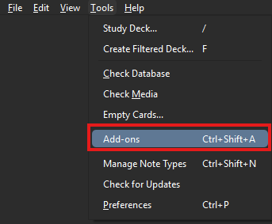
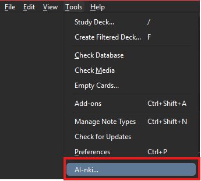

Study straight from your lecture diagrams.
Free Anki add-on
Which structure does the blue line point to?

Try it in Anki
Download for Windows-
Open Add-ons

In Anki, go to Tools → Add-ons.
-
Drag in the add-on
Drop the downloaded file into the Add-ons window.
-
Restart Anki
Close and reopen Anki.
-
Start AI-nki

Go to Tools → AI-nki.
Use the ChatGPT plan you already have
Eligible Plus and Pro plans power AI suggestions at no extra charge from AI-nki.
Connect to ChatGPT
In Anki, choose Tools → AI-nki → Continue with ChatGPT.
Select your eligible personal Plus or Pro account and approve in your browser.
Workspace access denied? Retry with your Personal workspace if it has Plus or Pro. For a managed workspace, contact your admin.
Don’t have an account?
U.S. student offer ended Oct. 31, 2026.